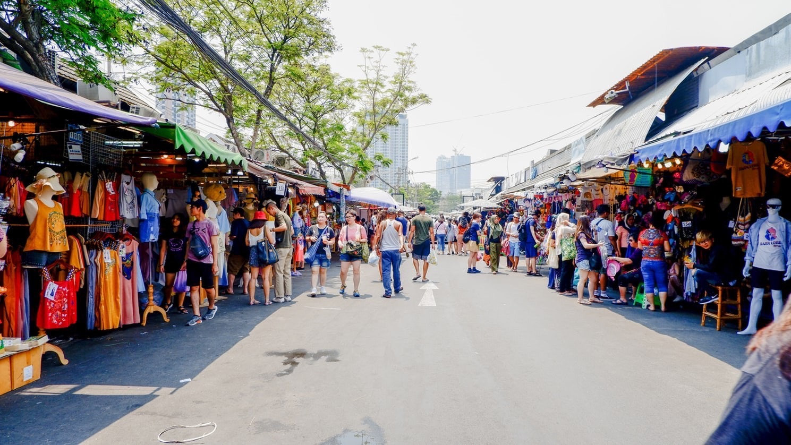
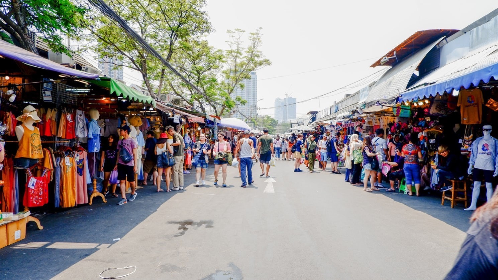

วัดพระแก้ว นี้เป็นวัดหลวงซึ่งตั้งอยู่ในพระบรมมหาราชวัง คล้ายกับเดียวกับ วัดพระศรีสรรเพชญ์ ซึ่งเป็นวัดในพระราชวังหลวงในสมัยกรุงศรีอยุธยา นั่นเองค่ะ ทำให้ที่นี่ไม่มีพระสงฆ์จำวัดอยู่ อีกทั้งภายในวัดยังเป็นที่ประดิษฐานพระพุทธมหามณีรัตนปฏิมากร หรือ พระแก้วมรกต ซึ่งเป็นพระพุทธรูปศักดิ์สิทธิ์ เป็นที่เคารพนับถือของคนไทยอีกด้วย
วัดอรุณวัดที่มีชื่อเสียงโด่งดังไปทั่วโลก ด้วยพระปรางค์ขนาดใหญ่ที่ประดับด้วยเครื่องปั้นดินเผาสีสันสดใส ตั้งตระหง่านเบื้องหลังผืนน้ำเจ้าพระยา เป็นแลนด์มาร์คที่คนทั่วโลกต่างพากันมาเช็กอิน ที่เที่ยวกรุงเทพ วันอรุณ หรือ วัดแจ้ง ที่ผู้คนเรียกขาน มีชื่อเต็มว่า “วัดอรุณราชวรารามราชวรมหาวิหาร” เป็นวัดโบราณสร้างตั้งแต่สมัยกรุงศรีอยุธยา กับตำนานกรุงธนบุรี ย้ายราชธานี ให้บูรณะปฏิสังขรณ์ และเคยเป็นที่ประดิษฐานพระพุทธมหามณีรัตนปฏิมากร (พระแก้วมรกต) ครั้งกรุงธนบุรีเป็นราชธานี
ที่อยู่ : 158 ถ.วังเดิม แขวงวัดอรุณ เขตบางกอกใหญ่ กรุงเทพมหานคร 10600
แผนที่ : https://maps.app.goo.gl/jiiTBrp5FqMDnScq8
เปิดให้เข้าชม : ทุกวัน ตั้งแต่ 08.00 - 18.00 น.
ค่าเข้า : คนไทยฟรี / ชาวต่างชาติคนละ 50 บาท
ตลาดนัดรถไฟ ศรีนครินทร์ ตลาดนัดกลางคืน สุดแนว ในกรุงเทพฯ ที่เราจะได้เพลิดเพลินไปกับบรรยากาศสุดประทับใจ กลิ่นอายของสไตล์วินเทจและความเรียบง่าย หนึ่งในแลนด์มาร์ค รวม เฟอร์นิเจอร์ ของตกแต่งบ้านสุดคลาสสิก รถโบราณ ของสะสมโบราณ เสื้อผ้าวินเทจ ของฝากสุดชิค และอาหารอร่อยๆ รวมถึงมีร้านนั่งชิลเอาเท่ๆ บรรยากาศเก่า ของโกดังเก่า และยังมีมุมให้เดินถ่ายรูปสวยๆ ชิคๆ อีกด้วยค่ะ
ตลาดนัดจตุจักร แหล่งช้อปปิ้งยอดฮิตของชาวไทย และชาวต่างชาติ เปิดในวันเสาร์-อาทิตย์ ส่วนวันพุธและพฤหัสบดีจะเป็นตลาดค้าส่งต้นไม้ หันไม้มาไม่ได้ค่ะ! เพราะเป็นแหล่งรวมของข้าวของเครื่องใช้ แฟชั่นเสื้อผ้าหน้ามผ แหล่งขายสัตว์เลี้ยงจากฟาร์ม เรียกได้ว่า สากกระเบือยันเรือรบ ขายที่นี่ไม่มีที่ไหนในโลกที่จะเหมือนที่นี่ได้อีกแล้ว
ที่อยู่ : สวนจตุจักร ถนนกำแพงเพชร 2 แขวงจตุจักร เขตจตุจักร กรุงเทพมหานคร
แผนที่ : https://maps.app.goo.gl/JtY7rxsQo28Wf9Xv9
เปิดให้เข้าชม : 09.00 - 20.00 น.
ตลาดต้นไม้จตุจักร : วันอังคาร 09.00 - 20.00 น. และวันพุธ-พฤหัสบดี 05.00 - 18.00 น.
หอศิลปวัฒนธรรมแห่งกรุงเทพมหานคร (Bangkok Art and Culture Centre) หรือ BACC ที่นี่เรียกว่าเป็นสวรรค์ของคนรักศิลปะ และมนุษย์งานศิลป์ที่หลงใหลในการสร้างสรรค์ผลงานเลยก็ว่าได้ เพราะที่นี่เป็นทั้งพิพิธภัณฑ์ศิลปะ และหอศิลป์วัฒนธรรม ไม่ว่าจะเป็นศิลปินสาขาภาค หรือไทยร่วมสมัยก็ต่างมาจัดแสดงนิทรรศการหมุนเวียนที่นี่ นอกจากโซนนิทรรศการหลักบนชั้น 7-9 แล้ว ก็ยังมีคาเฟ่ ร้านค้า เวิร์คช็อปศิลปะ และห้องสมุดศิลปะที่บอกเลยว่าเล็กแต่เด็ด ได้อารมณ์สุดๆ
ที่อยู่ : 939 ถนนพระราม 1 แขวงวังใหม่ เขตปทุมวัน กรุงเทพมหานคร
แผนที่ : คลิกเพื่อดูแผนที่
เปิดให้เข้าชม : 10.00 - 19.00 น. (หยุดทุกวันจันทร์)
สวนหลวง ร.9 เป็นสวนสาธารณะและสวนพฤกษศาสตร์ที่ใหญ่ที่สุดในกรุงเทพมหานคร มีพื้นที่ประมาณ 500 ไร่ อยู่ในแขวงหนองบอน เขตประเวศ ทางตะวันออกของกรุงเทพมหานคร จัดสร้างเพื่อสร้างเพื่อน้อมเกล้าฯ ถวายพระบาทสมเด็จพระเจ้าอยู่หัว ในศุภมงคลสมัยเจริญพระชนมพรรษาครบ 60 พรรษา ในวันที่ 5 ธันวาคม พ.ศ. 2530 ช่วงปลายปีอากาศดีๆ แบบนี้ ก็เหมาะกับการออกไปเดินเล่นพักผ่อนหย่อนใจที่สวนสาธารณะ รับลมเย็นๆ สุดอากาศสดชื่น และไปชมต้นไม้ดอกไม้หลากพันธุ์ที่แข่งกันเบ่งบาน รวมทั้งพาครอบครัวมาหากิจกรรมดีๆ ในหลวง ร.9 อีกด้วย
 
